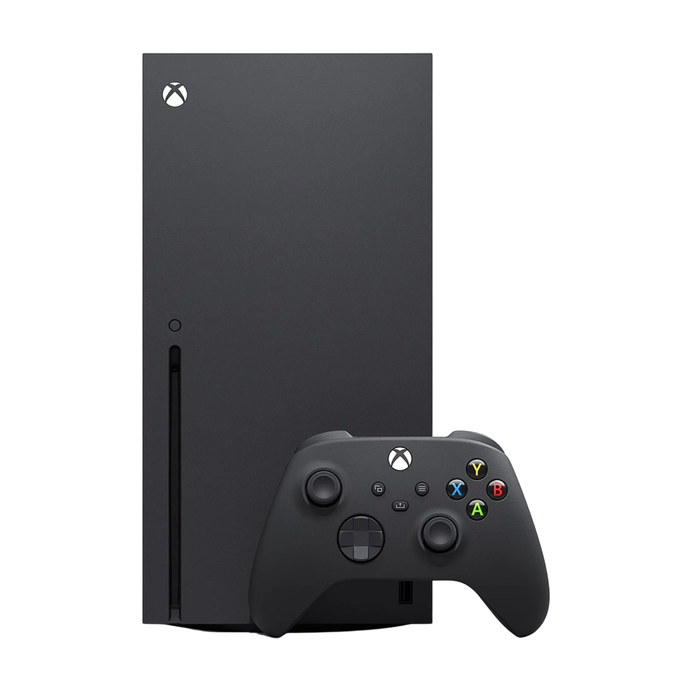
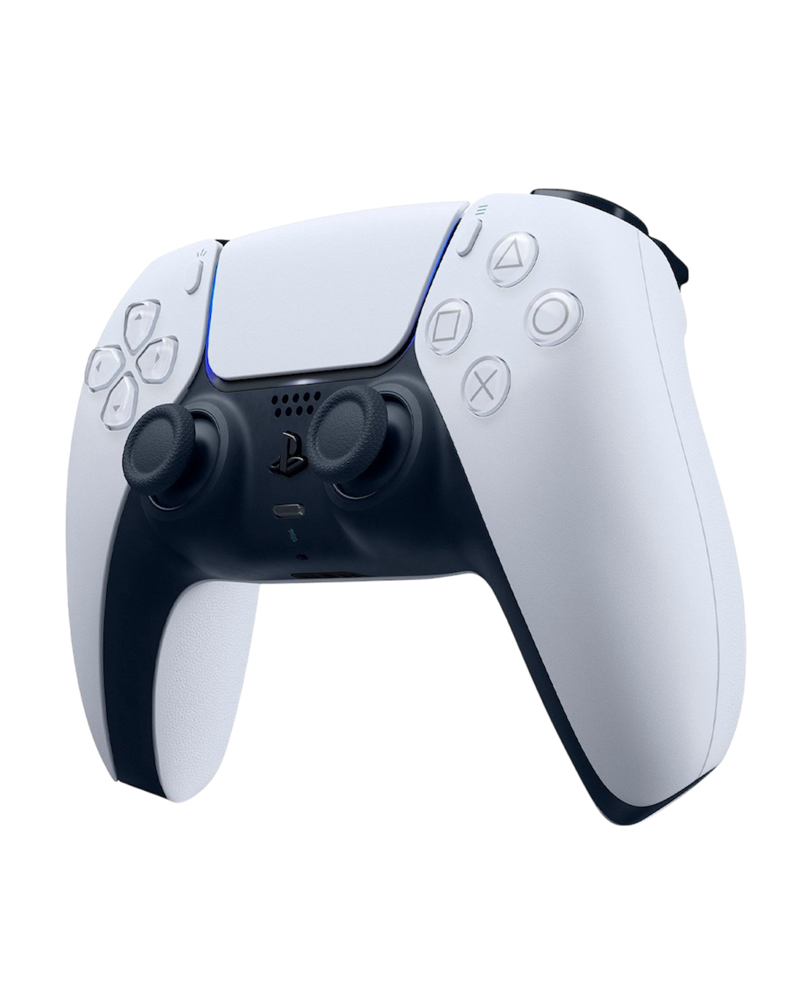

BLACK OPS 6

Muchos de los usuarios no están muy contentos y satisfechos con el paquete de los nuevos mapas dentro de COD.
BATTLEFIELD

Muchos de los gamers han aprobado las nuevas modalidades de juego dentro de Battlefield 2042.
XBOX SERIES X
La nueva actualización logró corregir muchas fallas en el funcionamiento de la consola. Pero aun así no logra superar al PS5.
PS5

El uso de los controles sin baterías descartables es una de las mayores ventajas de PS5 sobre Xbox.
CONTROL PS5
Nuevo lanzamiento del control de PS5 con mayor duración de bateria.
NINTENDO SWITCH

Nintendo anuncia una nueva actualización en Switch.
Encuentra las mejores reseñas de videojuegos y consolas solo aquí en Level Up.
Sumérgete en un mundo lleno de análisis detallados, comparaciones exhaustivas, y opiniones sobre los videojuegos más populares y las consolas del momento.
¡Únete a nuestra comunidad de gamers y mantente al tanto de todas las novedades! Encuentra todo esto y más, solo en Level Up!